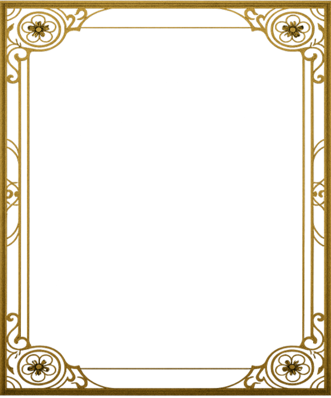

Zuo Ci profile

Character Profile
- Name
- Zuo Ci
- Birthday
- 11.15
- Role
- Mystic sage
- Hobby
- Stargazing
- Bio
- A mysterious immortal whose age is unknown. He once charted destiny and was urged to kill a girl; unwilling to murder the innocent, he raised her instead and guards her from the shadows.